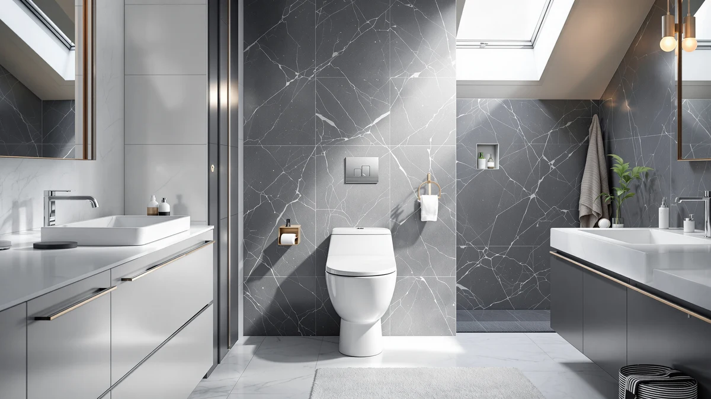

TOTO Aquia IV WASHLET+ Two-Piece Elongated Dual Flush Review (2026): Worth It?
Prices and picks verified as of November 2026. Independent, reader-supported reviews.


Quick Answer
The TOTO Aquia IV WASHLET+ Two-Piece Elongated Dual Flush toilet pairs a water-saving dual flush system with a bowl built to accept a WASHLET+ bidet seat later, but at $693.90 it's the most expensive toilet in this comparison. It earns that premium if bidet compatibility and TOTO's tornado flush matter to you; otherwise the American Standard Compact Cadet below saves you $53.90 without those features.
Our pick: TOTO Aquia IV WASHLET+ Two-Piece, $693.90 Check Price on Amazon
Bottom line: our top pick is the TOTO Aquia IV WASHLET+ Two-Piece Elongated Dual Flush 1.28 at $693.90.
Things to Know Before You Buy
- The Aquia IV is a two-piece toilet, meaning the tank and bowl are separate components joined at installation, unlike a one-piece model.
- At $693.90, it's the most expensive toilet in this comparison, costing more than the Kohler Santa Rosa ($680.55), the TOTO UltraMax ($672.78) and the American Standard Compact Cadet ($640.00).
- It's WASHLET+-ready, so you can add a TOTO bidet seat later without replacing the toilet or rerouting plumbing.
- The dual flush handle lets you pick a lighter flush for liquid waste and a full flush for solid waste, which can lower water use compared with a single-flush toilet.
- Amazon's listing doesn't show a public star rating or review count for this ASIN, so we can't cite one here, and a missing rating is not the same as a zero rating.
This TOTO Aquia IV WASHLET+ Two-Piece Elongated Dual Flush review exists because the model keeps surfacing in two-piece toilet searches without much independent coverage to justify its $693.90 price tag. We went through TOTO's published spec sheet, the current Amazon listing and the broader market for dual flush two-piece toilets in this price range to see whether the Aquia IV earns its spot above cheaper rivals like the American Standard Compact Cadet.
The short version: the Aquia IV is a strong pick if you want a two-piece toilet that's ready for a WASHLET+ bidet seat without upgrading to a pricier one-piece shell, and its dual flush system gives you a water-saving option most single-flush models skip. If a one-piece design matters more than bidet compatibility, the TOTO UltraMax below costs $21.12 less and the Kohler Santa Rosa saves you $13.35, while the American Standard Compact Cadet undercuts it by $53.90 if price is your main driver.
Why You Should Trust Us
Ilane Tall researches bathroom fixtures for Best One Piece Toilets, tracking manufacturer spec sheets, Amazon price movement and patterns across verified owner reviews for two-piece toilets like the TOTO Aquia IV WASHLET+. This TOTO Aquia IV review is built entirely from TOTO's public product data, current Amazon pricing and the feedback buyers leave on the listing page.
We do not run a testing lab. This research compares manufacturer data, pricing and owner feedback rather than personal use of the toilet. When TOTO doesn't publish a figure, such as rough-in distance, or Amazon doesn't show a rating for this ASIN, we say so in this review instead of filling in a number we don't have. We apply the same standard to the three alternatives below, so the comparison rests on what each brand actually publishes rather than on marketing language borrowed from a product listing.
Our Research Experience
To put together this TOTO Aquia IV WASHLET+ Two-Piece Elongated Dual Flush review, we started with TOTO's published spec sheet and feature list, then checked the current Amazon price and cross-referenced it against three other toilets in a similar price band: the Kohler Santa Rosa, the TOTO UltraMax one-piece and the American Standard Compact Cadet. We looked for patterns in verified owner reviews on each listing, focusing on recurring comments about flush performance, fit and ease of cleaning rather than one-off complaints.
We excluded toilets without a public spec sheet or without enough verified reviews to establish a pattern. Where TOTO doesn't publish a dimension, such as rough-in distance or bowl height, or Amazon doesn't show a review count for this ASIN, we note that the figure is unavailable rather than guessing at it.
Overview & Specs

TOTO Aquia IV WASHLET+ Two-Piece
What we like
- Dual flush option lets you choose a lighter flush for liquid waste and a full flush for solid waste
- WASHLET+-ready design accepts a TOTO bidet seat without special plumbing modifications
- Elongated bowl shape is the size most verified reviewers prefer for seated comfort
Flaws but not dealbreakers
- At $693.90, it costs more than the TOTO UltraMax ($672.78), Kohler Santa Rosa ($680.55) and American Standard Compact Cadet ($640.00) alternatives
- Two-piece construction leaves a seam between tank and bowl where grime can collect, unlike a one-piece model
- Amazon's listing doesn't show a public star rating or review count for this ASIN, so we can't cite one here
| Material | — |
| Size | — |
TOTO built the Aquia IV WASHLET+ Two-Piece around a dual flush system: a reduced-water option for liquid waste and a full-strength flush for solid waste on the same handle. TOTO designs the bowl to accept a WASHLET+ bidet seat directly, so buyers who want that upgrade later don't need to replace the toilet, only add the seat. The elongated bowl shape and a 360-degree tornado flush with a CEFIONTECT glaze that resists waste buildup are the two features TOTO highlights most for this model.
On price, the Aquia IV sits at the top of this comparison at $693.90, cheaper than the American Standard Town Square S we reviewed separately but more expensive than every alternative listed below. That premium buys WASHLET+ compatibility and TOTO's dual flush engineering, which the budget-focused American Standard Compact Cadet doesn't offer. Because it's a two-piece design, it keeps the seam between tank and bowl that one-piece toilets like the Kohler Santa Rosa and TOTO UltraMax remove, and Amazon doesn't show a star rating or review count for this specific ASIN, so we can't point to a review-based track record here.
What We Liked
The clearest strength of the TOTO Aquia IV WASHLET+ Two-Piece is the flexibility it builds in. You get a working dual flush, two-piece toilet now, with a direct path to a WASHLET+ bidet seat later if you decide you want one, instead of needing to buy a different toilet to get that compatibility.
We also like that TOTO pairs the dual flush system with its 360-degree tornado flush and CEFIONTECT glaze, two features the brand uses across its higher-end lines rather than a stripped-down base model. Owners researching dual flush toilets consistently point to lower water bills as the main draw, since the lighter flush setting uses less water per use than a standard single-flush system.
The elongated bowl is a practical plus too. It's the shape most verified reviewers prefer for seated comfort over a rounder, more compact bowl style, and it's the same bowl shape TOTO uses on the UltraMax, so you're not giving up seating comfort by picking the two-piece version.
What Could Be Better
Price is the clearest drawback: at $693.90, the Aquia IV costs more than the TOTO UltraMax, Kohler Santa Rosa and American Standard Compact Cadet in this comparison, and none of those alternatives give up much in day-to-day function.
It's a two-piece design, which means the seam between tank and bowl stays as a cleaning spot that the one-piece TOTO UltraMax and Kohler Santa Rosa don't have. Amazon also doesn't show a public star rating or review count for this ASIN, so we can't cite a review-based track record the way we can for some other models we've covered.
If you don't plan to add a WASHLET+ seat, you're paying for compatibility you won't use. The American Standard Compact Cadet below skips that feature and costs $53.90 less.
Who Is It For?
This TOTO Aquia IV WASHLET+ Two-Piece Elongated Dual Flush toilet is the right pick for buyers who want a dual flush, two-piece toilet now and the option to add a WASHLET+ bidet seat later without swapping fixtures. It also suits anyone who prioritizes TOTO's tornado flush and CEFIONTECT glaze over a strictly one-piece shell.
It's a weaker fit if you want the lowest price in this comparison: the American Standard Compact Cadet undercuts it by $53.90. It's also not the pick for buyers who specifically want a one-piece toilet, since the TOTO UltraMax and Kohler Santa Rosa below both remove the tank-to-bowl seam this model keeps. And if you're outfitting a rental bathroom where you'll never install the bidet seat, the WASHLET+ compatibility is a cost you'll pay for without using, so a plainer dual flush toilet can cover your needs for less money.
Alternatives to Consider
If the Aquia IV doesn't fit your budget or your feature list, these three alternatives came up most often in our research into two-piece and one-piece toilets in the same price range. Each trades away something the Aquia IV offers, whether that's bidet compatibility, the dual flush handle or the brand name, in exchange for a lower price or a one-piece shell.

Also Great
Kohler 30811-96 Santa Rosa One-Piece
A one-piece toilet with Comfort Height seating, priced $13.35 less than the Aquia IV, for buyers who want to skip the two-piece seam.
$680.55
Check Price on Amazon
Also Great
TOTO® UltraMax® One-Piece Elongated 1.6
A one-piece toilet with a 1.6-gallon-per-flush system, priced $21.12 below the Aquia IV, for buyers who want a seamless shell from the same brand.
$672.78
Check Price on Amazon
Best Value
American Standard 2403128.222 Compact Cadet
A compact, space-saving design priced $53.90 below the Aquia IV, the lowest price in this comparison.
$640.00
Check Price on AmazonFrequently Asked Questions
Is the TOTO Aquia IV WASHLET+ Two-Piece Elongated Dual Flush worth $693.90?
For buyers who want a dual flush two-piece toilet that's ready for a WASHLET+ bidet seat later, yes. The tornado flush and CEFIONTECT glaze justify a premium over toilets that skip bidet compatibility. Shoppers focused purely on price have cheaper options, including the American Standard Compact Cadet at $640.00.
What does WASHLET+-ready mean on the TOTO Aquia IV?
It means the bowl and seat mounting are built to accept a TOTO WASHLET+ bidet seat directly, without rerouting plumbing or replacing the toilet. Buyers who want that upgrade can add the seat later instead of planning for it at the time of purchase.
How does the TOTO Aquia IV two-piece compare to the TOTO UltraMax one-piece?
Both are TOTO toilets, but the UltraMax is a one-piece design that removes the tank-to-bowl seam, while the Aquia IV is a two-piece model built around WASHLET+ bidet compatibility and a dual flush system the UltraMax doesn't offer. The UltraMax costs $21.12 less, so the choice comes down to seamless cleaning versus bidet readiness.
Final Verdict
This TOTO Aquia IV WASHLET+ Two-Piece Elongated Dual Flush review comes down to a straightforward trade-off. TOTO's two-piece toilet delivers dual flush water savings and WASHLET+ bidet compatibility at $693.90, the highest price among the four models we compared, without a public star rating or review count to confirm a long track record. If bidet compatibility and TOTO's tornado flush matter to you, the Aquia IV is worth the premium over the American Standard Compact Cadet. Buyers who'd rather save money or go one-piece should look at the Kohler Santa Rosa or TOTO UltraMax above.